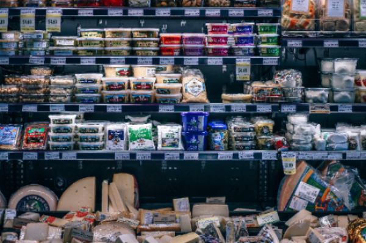

Overview
Why go Dairy Free?Whether you are sensitive to dairy, begining a challenge, or have a growing desire to venture into something new, there are many benefits that come with removing/limiting dairy consumption. These include, clearer skin, weightloss, decreasing your enviormental footprint, and better digestion. In fact, it has been estimated around "70% of the world's population has some degree of lactose intolerance". This is due to the fact that after weaning, humans no longer need the ability to digest milk so they begin producing less lactase which is used to break down and digest lactose. A dairy-free diet may actually aid digestion.
 Dairy-Free meals"What in the world am I going to eat?" is what you may be asking yourself. The answer is plenty!! You can still enjoy your favorite foods such as pizza, tacos, and sandwiches. For many recipes you can simply substitute the dairy ingredient required with a dairy alternative. For example instead of making mac and cheese with a cheddar, you can use vegan cheddar. Proteins such as chicken are also dairy-free so you can make lemon-pepper chicken with rice for dinner and not have to worry one bit. There are also thousands of recipes online that are dairy-free and take you step by step on how to prepare each dish.
Dairy-Free snacks and dessertsWhen it comes to snacks and desserts, the possibilities are endless. Pretzels, veggie chips, cereal, and fruits/vegetables are all dairy-free! Your favorite protein shakes and smoothies can also be made with the milk alternative of choice. Dairy-free ice cream has also become popular, several flavors made with almond milk and coconut milk have come to light in the past few years. Most dark chocolate is also dairy-free.
| Poland | 78% |
| Italy | 69% |
| Spain | 68% |
| Germany | 63% |
| France | 63% |